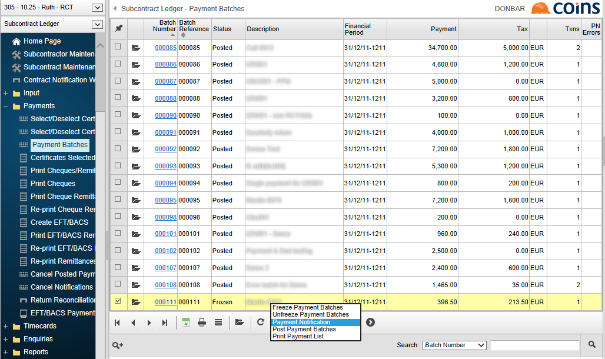
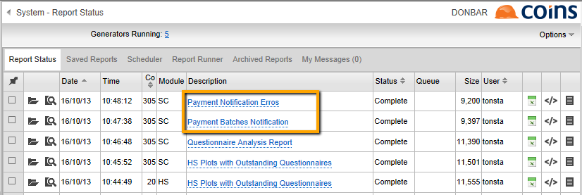

eRCT - Payment Notification
Payment notification is the electronic process under the eRCT scheme for notifying Revenue of any proposed payment to be made under a Relevant Contract. There is a legal requirement to notify Revenue of any proposed payment to be made under a Relevant Contract before making any such payment. On receipt of the Payment Notification, Revenue will advise the Principal of the amount of tax to be deducted from the payment, if any.
To make a payment notification:
- Go to Payment Batches.

-
the payment batch for which you want to make a payment notification. The batch must be frozen.
- From the Choose Action list select Payment Notification.
- Click
 .
.
sends an XML payment notification to the Revenue webservice. For each notified payment, then automatically updates the certificate with the authoration details received from Revenue. Certificates with notification errors are flagged as such (see eRCT Payment Notification Errors).
When the process has completed, the Report Status workbench shows the Payment Batches Notification Report. If there were any errors in the batch, there will also be an errors report.

If you record a manual payment, you need to make the payment notification manually on the ROS website. See eRCT - Manual Payment.